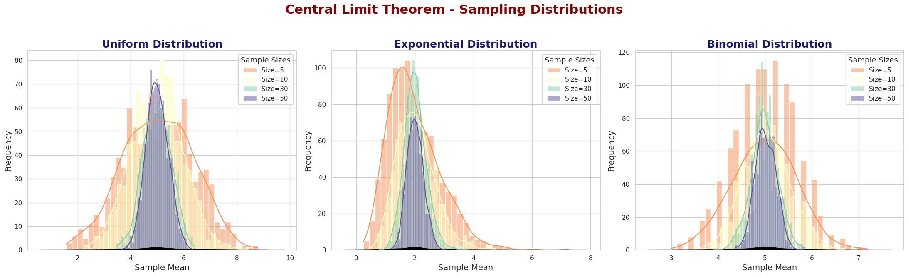

Problem 1
# Exploring the Central Limit Theorem through Simulations
# Motivation
The Central Limit Theorem (CLT) is a cornerstone of probability and statistics, stating that the sampling distribution of the sample mean approaches a normal distribution as the sample size increases, regardless of the population’s original distribution. Simulations provide an intuitive and hands-on way to observe this phenomenon in action.
## Task Overview
- Simulating Sampling Distributions: We will generate populations from different distributions:
- Uniform distribution.
- Exponential distribution.
-
Binomial distribution.
-
Sampling and Visualization:
- Take random samples of different sizes (5, 10, 30, 50).
- Calculate the sample mean for each sample.
- Repeat the process multiple times to create a sampling distribution of the sample mean.
-
Plot histograms of the sample means for each sample size.
-
Parameter Exploration:
- Investigate how the shape of the original distribution and the sample size affect the rate of convergence to normality.
-
Highlight the impact of the population’s variance on the spread of the sampling distribution.
-
Practical Applications: The Central Limit Theorem has numerous real-world applications:
- Estimating population parameters.
- Quality control in manufacturing.
- Predicting outcomes in financial models.
Central Limit Theorem Formula
The Central Limit Theorem states that if \(X_1, X_2, ..., X_n\) are i.i.d. random variables with mean \(\mu\) and variance \(\sigma^2\), then the sample mean \(\bar{X}\) satisfies the following distribution:
Where: - \(\mu\) is the population mean. - \(\sigma\) is the population standard deviation. - \(n\) is the sample size.
This means as the sample size \(n\) increases, the sampling distribution of the sample mean will approach a normal distribution with mean \(\mu\) and standard deviation \(\frac{\sigma}{\sqrt{n}}\).
---
## Python Implementation
Now, let's implement the simulation and visualize the Central Limit Theorem in action.
import numpy as np
import matplotlib.pyplot as plt
import seaborn as sns
# Set style for plots
sns.set(style='whitegrid')
# Set random seed for reproducibility
np.random.seed(42)
# Population size and sample sizes for simulations
population_size = 100000
sample_sizes = [5, 10, 30, 50]
num_samples = 1000
# Generate the populations for different distributions
pop_uniform = np.random.uniform(0, 10, population_size) # Uniform distribution
pop_exponential = np.random.exponential(scale=2, size=population_size) # Exponential distribution
pop_binomial = np.random.binomial(n=10, p=0.5, size=population_size) # Binomial distribution